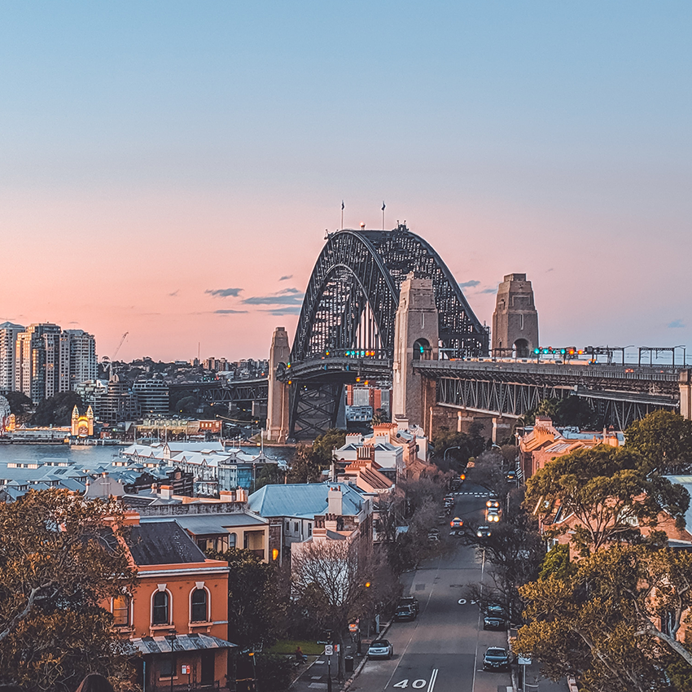
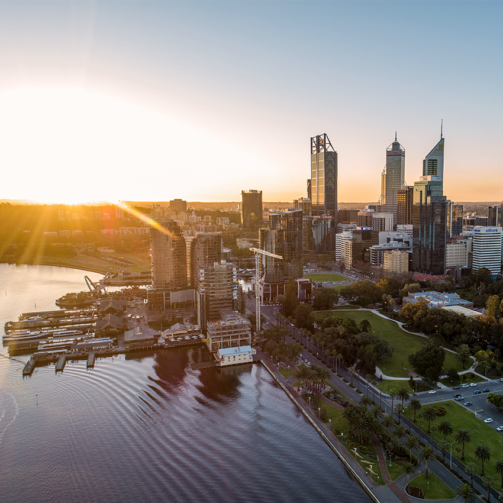

Place
Cities
-
- Sydney
-
They call Sydney a city of villages, and it doesn’t take long to realise that each pocket of the city has its own distinct vibe. From harbourfront neighbourhoods to sun-drenched beaches and vibrant urban areas, here are some of the city’s must-see districts.

-
- Melbourne
- A perfect blend of rich cultural history and new age trends is waiting for you in Melbourne. As the sun goes down, the city comes to life with a vibrant dining scene as well as events and exhibitions. Explore its bustling laneways, trendy neighbourhoods and sophisticated foodie scene to get a taste of what Melbourne is all about.
-
- Brisbane
- Brisbane’s snaking river is a landmark throughout its central suburbs. On the north bank, the city centre nestles alongside some of Brisbane’s most happening areas for wining and dining. South of the river, leafy residential streets and parklands reveal surprising cultural and sporting attractions. Find your favourite spot for a stay in this fun-loving city.
-
- Perth
- It might seem like a simple choice. Perth is known for enjoying more sunny days than any other Australian capital city, so why wouldn’t you base yourself at one of its inviting white-sand beaches, such as Cottesloe?
However, inner-city neighbourhoods such as Northbridge and Mount Lawley offer an equally alluring experience, with their wine bars and museums, sprawling parks, restaurants and cutting-edge street art.
Whatever type of stay or play you’re after, this guide will help you find your perfect base.

OTHERS
-
- Gold Coast
- From theme parks to shopping, surfing to ancient rainforest.
-
- Canberra
- Find a mix of history, art and the outdoors in Australia's capital city.
-
- Grampians
- Luckily, her love for Mike prevails and she comes to his rescue.
-

- Byron Bay
- A mecca of sand, sun and serenity, this New South Wales beach town is a coastal paradise.
-
- Flinders Ranges
- Explore a landscape more than 600 million years old.
-
- Great Barrier Reef
- The Great Barrier Reef may be Australia’s most well-known natural asset.
 SCROLL DOWN
SCROLL DOWN